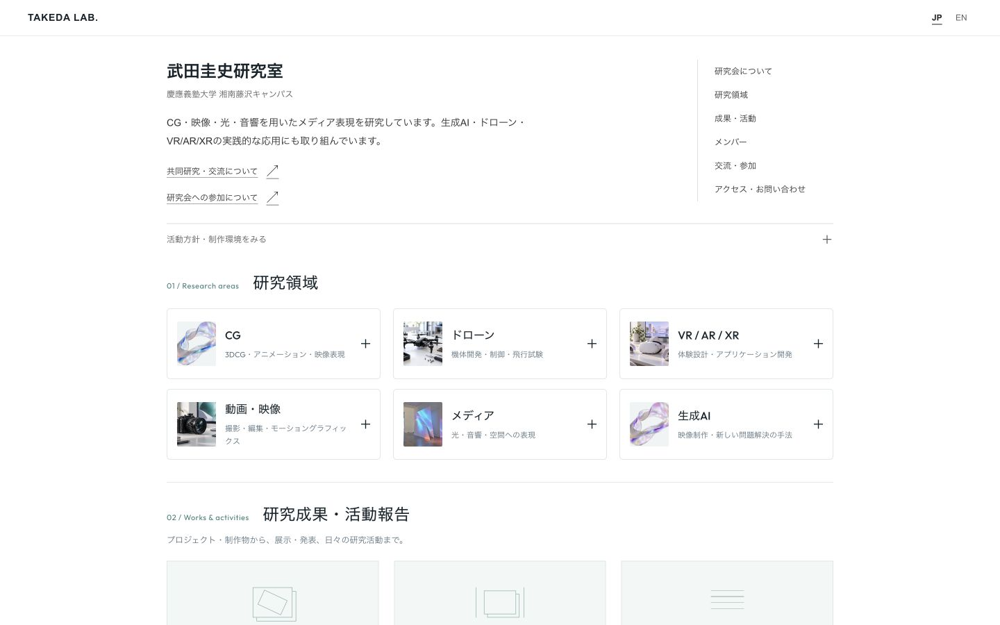
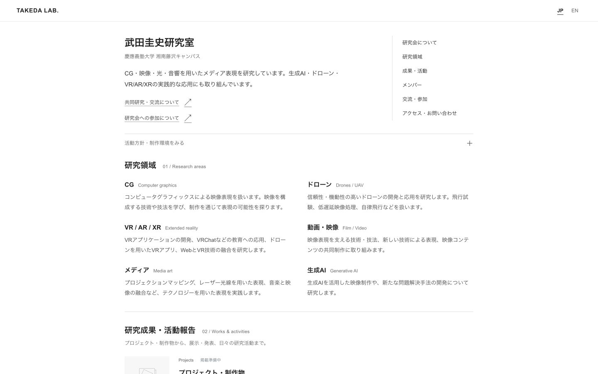
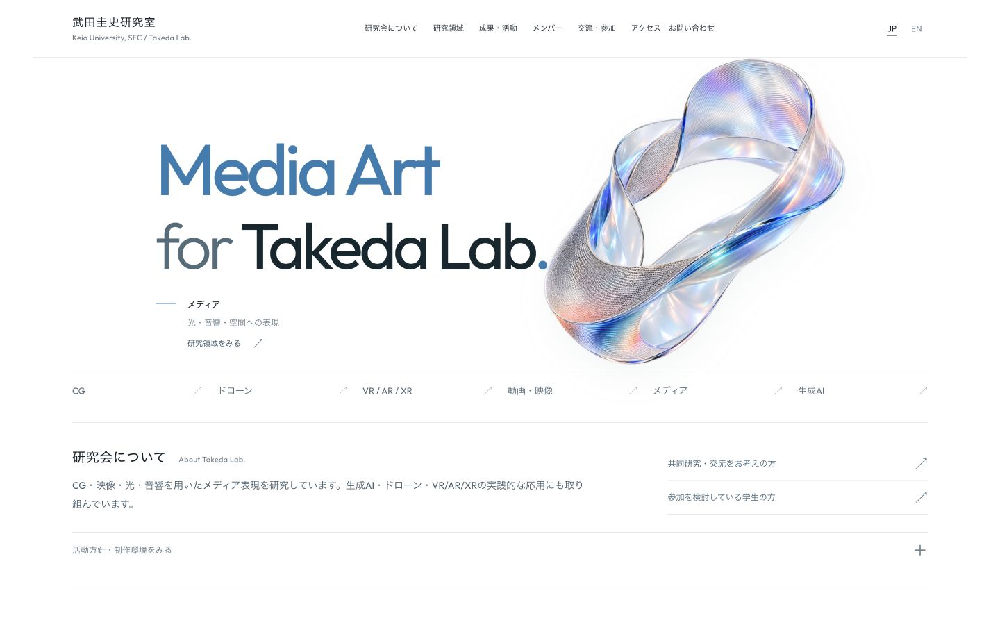
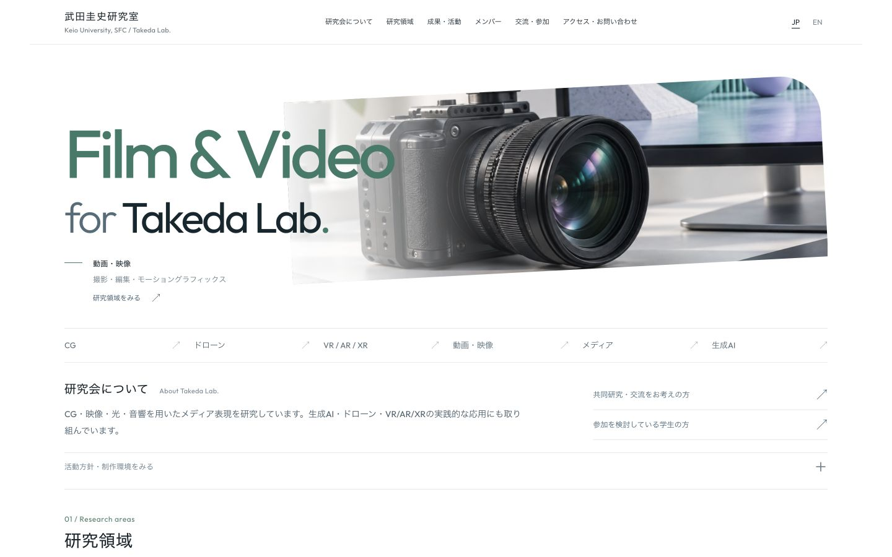
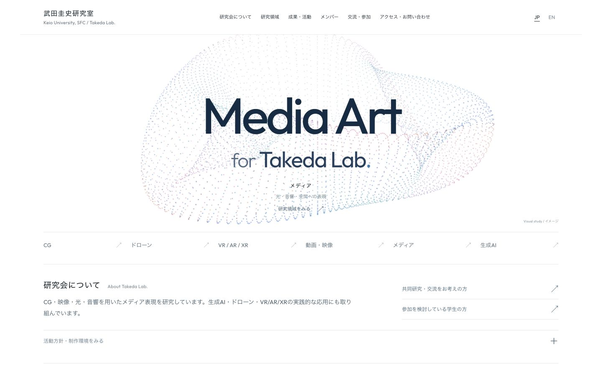

Profile & research cards
F紹介と研究カードNEW
E案の紹介と縦並びの目次に、D案の画像付き研究領域・成果・メンバー欄を組み合わせた案。
E案の上部を紹介と縦の目次に整理し、D案の画像付きカードと組み合わせたF案を追加しました。6案とも研究領域・成果・メンバー・アクセスと、共同研究／交流・学生参加の2つの導線を備えています。

Profile & research cards
E案の紹介と縦並びの目次に、D案の画像付き研究領域・成果・メンバー欄を組み合わせた案。

Academic profile
chujo.meの細いヘッダーと本文中心の構成を参考にしたE案。紹介と交流・参加の入口を左、縦並びの目次を右にまとめ、本文幅も整えました。



